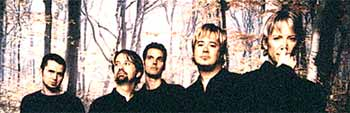
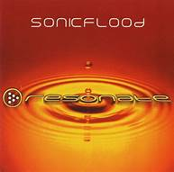

|
| Home |
| Band Profile |
| Music |
| Tour Dates |
| News |

SONICFLOOD a modern rock praise and worship band, continuing to remain on the cutting edge of the youth praise and worship movement in the united states. SONICFLOOD isn't your typical modern rock Christian music band. There record sales have resulted in an RIAA certified gold album (over 500,000 units sold) and they will travel to over 120 cities playing before over 400,000 people in the year 2001 alone.
But they are not typical. . . They are leaders in the Christian music industry and are redefining the face of Christian music today. In fact in just 18 months. SONICFLOOD has redefined the roll of praise and worship not only within Christian music, but also within America. With a vision and calling that has "always been about worship and joining god in his will and purposes," the short life of SONICFLOOD has truly been about praising god for his works of renewal and challenging others to do the same.
|  |